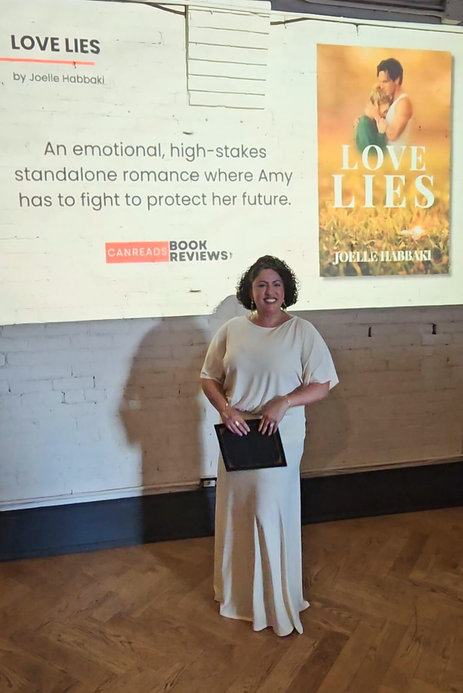
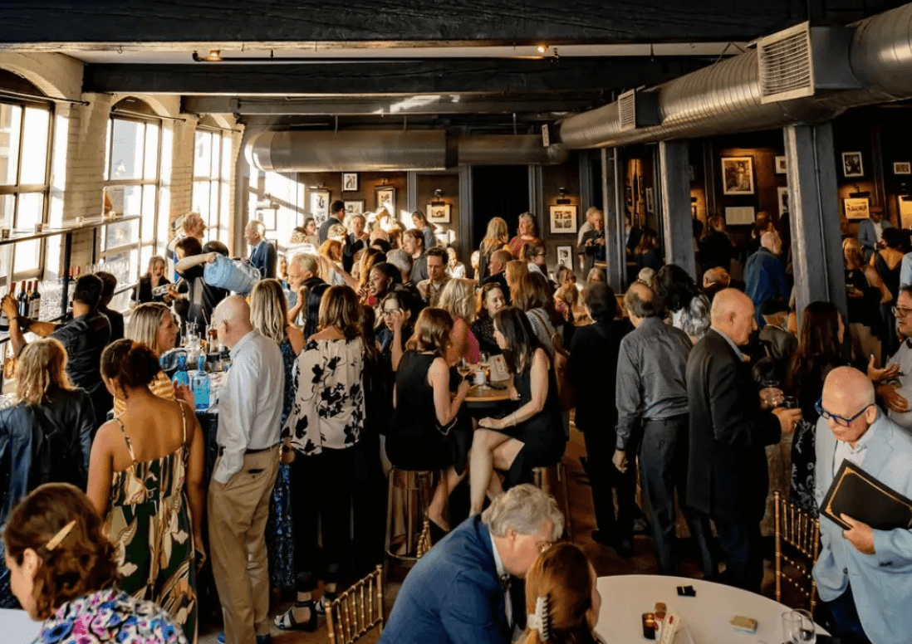
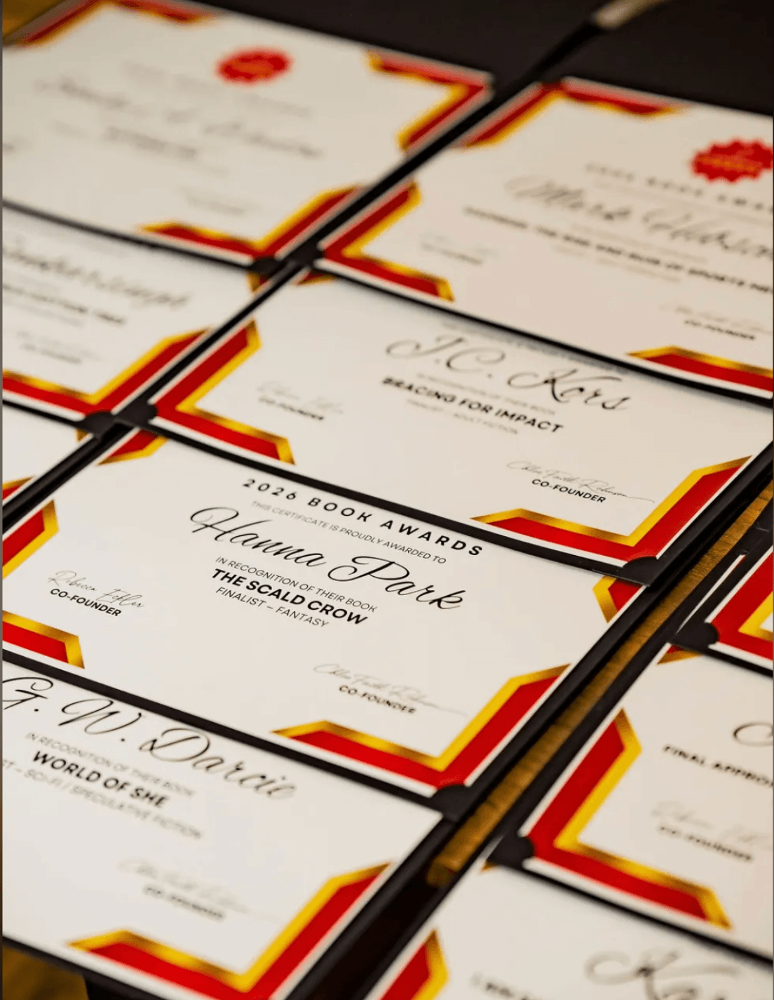

Drag and Drop Website BuilderJoelle Habbaki’s standalone romantic suspense was recognized among the Top 3 titles in the Romance category at the inaugural CANREADS Book Awards, celebrated at Storys Building in downtown Toronto.
Some milestones happen quietly. Others arrive in a room full of writers, readers, publishers, cameras, conversation—and the unmistakable feeling that a book has travelled beyond the private space where it was first imagined.
For Love Lies, that moment came in Toronto on May 28, 2026, when the novel by Lebanese-Canadian independent author Joelle Habbaki was recognized with a Top 3 placement in the Romance category at the inaugural CANREADS Book Awards. The distinction did not make Love Lies the category winner; it placed the book among the three finalists recognized at the event.
That context matters. CANREADS reported receiving more than 400 submissions from across Canada in its inaugural awards year. For a book published independently through Resilient Heart Press, being selected among the final Romance titles marked a meaningful point in its journey from manuscript to published novel to recognized work.

For an author, an award announcement can begin as a line of text on a screen. A title appears. A category is named. The news is shared. But recognition changes character when it becomes physical: a room, a stage, an audience, a photograph, a moment that can be remembered rather than merely read.
Habbaki arrived at the CANREADS Awards as the author of Love Lies, a contemporary romantic suspense novel built around betrayal, attraction, legal pressure and the uneasy question of how much trust can survive when the stakes keep rising.
The Top 3 placement also sits within a larger creative path. Habbaki writes and publishes through Resilient Heart Press, developing stories designed to move between emotional intimacy and high-stakes tension. With Love Lies, that balance became part of the book’s identity—and part of what carried it into the 2026 Romance finalists.
The inaugural awards brought books into conversation with the people behind them. Authors, reviewers, publishers, industry professionals and readers gathered under one roof.

The setting was Storys Building at 11 Duncan Street in downtown Toronto. The venue in the heart of the Entertainment District, and its exposed brick, timber beams, windows and layered event spaces gave the evening a character that felt unusually well suited to a celebration of storytelling. It was not a neutral conference room. It felt like a place with a story of its own.
That atmosphere mattered. Awards are, by definition, about results, but the evening around the results creates a different kind of value: authors meeting authors, readers discovering books, conversations beginning before the ceremony and continuing after it. For a new Canadian literary event, the room itself became part of the memory.
An awards night begins long before the doors open. For Joelle, it started with the quiet rituals of getting ready, the anticipation of heading downtown, and the surreal moment of arriving at Storys Building knowing Love Lies had carried her there.
This short video follows that day from her point of view: the preparation, the journey, the people, the room, and the small in-between moments that made the night feel real. It is not a recap of the ceremony, but a personal glimpse into what it felt like to live one milestone from the inside.
At the centre of Love Lies is Amy Beckett, whose life is collapsing on several fronts at once. Her fiancé, James Devlin, has turned love, money and obligation into leverage, while the café she has fought to build is under threat. When Matthew Warren, the formidable lawyer hired on the other side of that fight, enters her life, Amy is forced to navigate attraction at the exact moment trust has become most dangerous.
What gives the novel its tension is that the romance does not sit apart from Amy’s larger struggle. Matthew is connected to the very conflict that could cost her the café, James still holds financial power over her, and every emotional choice carries practical consequences. Desire, survival, loyalty and fear keep colliding, so the love story develops under pressure rather than in isolation.
Set in Madison, Love Lies blends contemporary romance with suspense, legal conflict and psychological stakes. CANREADS Book Reviews described the book as a “gripping romantic suspense” and highlighted its emotional intensity and high-stakes tension. That description gets to the heart of the novel: this is a romance driven not only by chemistry, but by what its characters risk when trust becomes harder than desire.
Love Lies is interested in what happens when attraction arrives before trust has been earned—and when love has to exist inside the consequences of everything that came before it.

Love Lies earned a Top 3 placement in the Romance category at the inaugural 2026 CANREADS Book Awards, placing it among the final three titles recognized in its category.
The recognition marked another stage in the book’s journey. What began as a manuscript became a Resilient Heart Press publication, found its readers, drew critical attention, and ultimately reached an awards stage in Toronto.
For Resilient Heart Press, that is the significance of the moment. Not simply another line for a biography or book page, but evidence of how far a story can travel once it leaves the hands of the person who created it.
And for Love Lies, it becomes part of the book’s history: publication, readership, recognition, and... whatever comes next.
Awards create moments of pause: a chance to look at how far a story has travelled before turning toward what comes next. Love Lies left Storys Building with a Top 3 Romance placement attached to its name, but the more interesting story is still the one beyond the room. The readers who find it afterward, the conversations it starts, and the next creative chapter already taking shape.
For an independent press, that is the real continuum. One book leads to another. One milestone becomes part of a larger body of work. And one night in downtown Toronto becomes a permanent page in the story behind the story.
Drag and Drop Website Builder